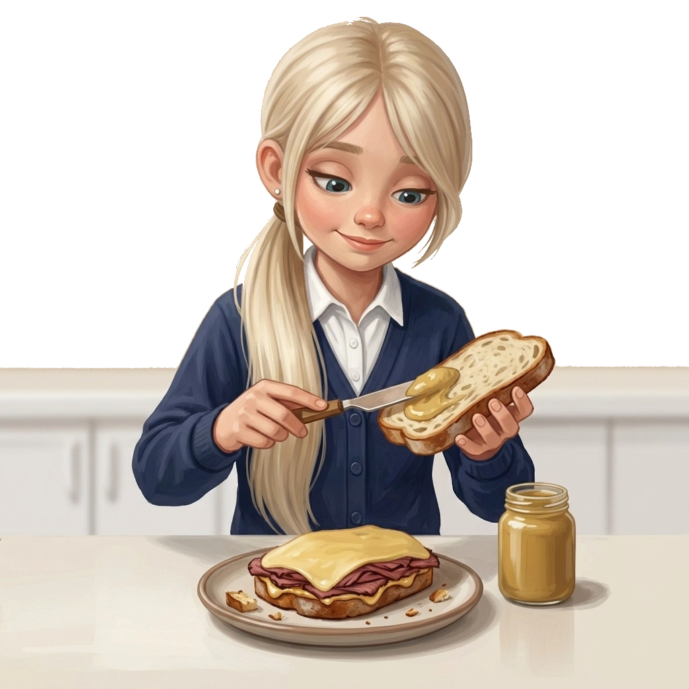
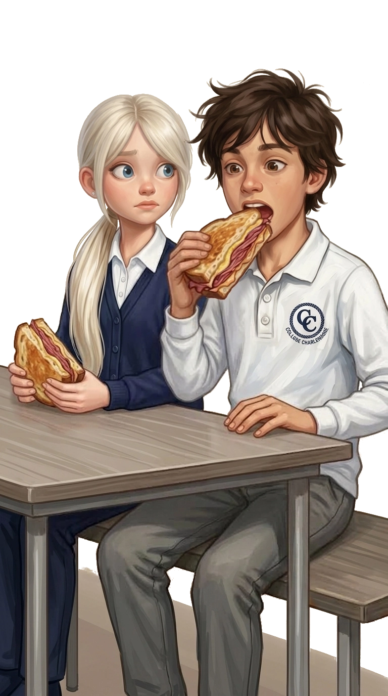

Je ne ferai plus JAMAIS de sandwich à Keb. Jamais, jamais, jamais.
Il vient manger chez nous à peu près tout le temps. Le midi, à l'école, il regarde toujours dans ma gamelle pour voir s'il y a un sandwich de maman dedans. Elle en fait des tellement bons, avec de la viande fumée, du fromage et sa sauce. Il dit toujours que c'est le meilleur sandwich du monde et que c'est son jour de chance.
Aujourd'hui, j'ai voulu lui en faire un moi-même. Maman m'a montré comment faire et j'ai essayé de faire pareil. J'étais tellement contente.
Il a mordu dedans et il a fait une face bizarre.
« Ça goûte bizarre, aujourd'hui. »
Je capote. Je lui ai crié que je ne lui ferais plus jamais de sandwich et je le lui ai arraché des mains.
« C'est toi qui l'as fait ? » qu'il m'a demandé, tout surpris.
Ben oui, c'est moi ! Ça ne veut pas dire que c'est raté !
J'y ai goûté pour lui prouver qu'il avait tort.
Bon. C'était peut-être un peu fort en épices. Mais il n'était pas obligé de le dire comme ça, devant tout le monde. La prochaine fois, il mangera son sandwich ordinaire, na.
version provisoire
Bek, 12 ans — journal intime, écrit à Florence
Je commence à comprendre que mon journal ne sert pas juste à écrire ce qui m'arrive. Je pourrais aussi m'en servir pour comprendre pourquoi certaines choses me sont restées.
Il y a une image qui me revient souvent : Keb, penché au-dessus de ma gamelle, les midis, l'air presque solennel, comme si le sort du monde dépendait de ce qu'il y avait dedans. Ma mère faisait des sandwichs qu'il aurait pu manger tous les jours sans jamais s'en lasser.
Un midi, avant notre départ pour l'Italie, j'ai voulu en faire un moi-même. Je ne sais toujours pas exactement pourquoi ça me tenait tant à cœur. Peut-être que je voulais lui prouver que je pouvais faire aussi bien que ma mère. Peut-être, plus simplement, que je voulais être celle qu'on admire, pour une fois, plutôt que celle qui sert les compliments de quelqu'un d'autre.
Ça ne s'est pas passé comme je l'espérais.
Sa grimace, sa remarque — « bizarre » — et ma colère qui a explosé d'un coup, disproportionnée, presque comique vue d'ici. Je me revois lui arracher le sandwich des mains, jurer que je ne lui en referais plus jamais.
Ce que je trouve étrange, en l'écrivant aujourd'hui, ce n'est pas que le sandwich était raté. C'est que je le savais déjà, au fond, avant même d'y goûter moi-même pour lui prouver le contraire. Je voulais juste qu'il ait tort.
Je me demande encore pourquoi ça me dérangeait autant, à l'époque, qu'il n'aime pas ce que j'avais fait. Peut-être que ce n'était jamais vraiment une histoire de sandwich.
Version raffinée de l'entrée originale dans mon cahier de math, datée du 20 novembre 2017
Keb et moi dînons et soupons régulièrement à la maison de l'un et de l'autre, et ce, depuis des lustres. En fait, on n'a même plus besoin de « s'inviter » à manger. Si je me trouve à la maison de Keb en soirée, ses parents (une fois sa mère, une fois son père, les deux se divisant généralement les tâches de la maison) font automatiquement une quatrième portion. Ou bien — cela ne m'a jamais été parfaitement clair — ils retranchent simplement un peu de leur assiette habituelle pour m'en faire une, sachant de toute façon que, d'appétit, je n'en ai pas un gros.
Je crois que Keb a profité de cette entente tacite qu'avaient nos parents pour insister pour qu'on soit le plus souvent possible chez nous la fin de semaine, car ma mère avait l'habitude de faire des repas plus somptueux (et franchement délicieux) le samedi et le dimanche. Ma mère cuisine avec la même patience et la même méticulosité qu'elle peint, et le résultat est toujours à la hauteur. Bref…
Toutefois, le moment pour lequel Keb était le plus emballé était le dîner à l'école. Pourquoi ? Parce qu'il espérait tomber, dans MA gamelle, sur un des fameux sandwichs de ma mère. C'est tout comme s'il ne pouvait pas penser à autre chose du matin jusqu'au midi : de la viande fumée, de la moutarde, du fromage, une sauce spéciale entre deux tranches de pain de la meilleure boulangerie en ville. J'étais porteuse de ce précieux trésor au moins une fois par semaine. Son jour de chance.
(Parfois, je me demande si on n'est pas devenus de si bons amis à cause des sandwichs de ma mère. Il ne manquait jamais de s'asseoir à côté de moi les midis et me faisait toujours les beaux yeux. Ah, Keb ! Tu m'aimes pour les sandwichs de ma mère, c'est ça ?)
Un jour, j'ai voulu lui faire une surprise. J'ai demandé à ma mère si je pouvais moi-même faire le sandwich pour le partager avec lui. Elle m'a montré comment faire et je me suis exécutée… j'y ai mis du mien, j'y ai mis de l'amour. Et pourtant. Et pourtant !

Bek, toute à sa tâche, le jour du fameux sandwich
Je lui ai fait goûter mon sandwich, les yeux pétillants d'excitation, dans l'attente de le voir tomber des nues. C'est pourtant tout le contraire qui s'est produit. Il est resté aux nues.
« Ça goûte bizarre, aujourd'hui. »
J'avais envie de le zigouiller, cet impertinent ! Comment osait-il dénigrer le fruit de mes entrailles ? Le fruit de mon amour inconditionnel ?
« Je ne te ferai plus jamais de sandwich ! »

Le moment fatidique — Keb mord, Bek observe
Il m'a regardée d'un air interloqué :
« C'est toi qui l'as fait ? »
Ça m'était sorti tout seul. Je ne savais plus comment réagir, alors je le lui ai repris d'entre les mains. J'y ai pris une bouchée comme pour lui montrer que mon sandwich était parfaitement normal et excellent… mais cette première bouchée m'a fait ravaler ma pensée originelle.
Le goût était effectivement étrange.
J'avais peut-être exagéré sur les épices.
— R. B.
Structure attendue au secondaire
Exemple
Sujet fictif, sans lien avec l'exercice — juste pour voir à quoi ça ressemble.